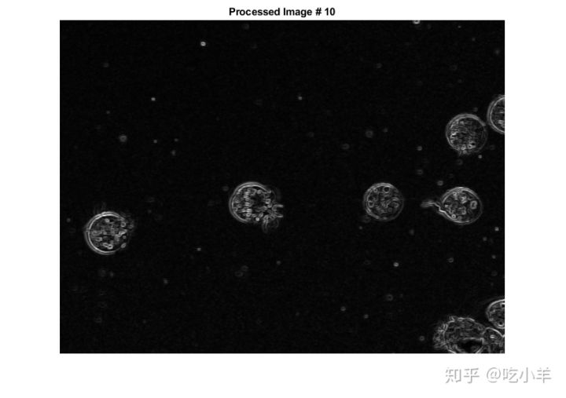

Home
本示例说明如何对图像序列执行操作。该示例创建一个图像数组，并将整个数组传递给stdfilt函数，以便对序列中的每个图像执行标准偏差过滤。
创建一个文件名数组。
fileFolder = fullfile(matlabroot,'toolbox','images','imdata');
dirOutput = dir(fullfile(fileFolder,'AT3_1m4_*.tif'));
fileNames = {dirOutput.name}'
numFrames = numel(fileNames)
fileNames =
10x1 cell array
{'AT3_1m4_01.tif'}
{'AT3_1m4_02.tif'}
{'AT3_1m4_03.tif'}
{'AT3_1m4_04.tif'}
{'AT3_1m4_05.tif'}
{'AT3_1m4_06.tif'}
{'AT3_1m4_07.tif'}
{'AT3_1m4_08.tif'}
{'AT3_1m4_09.tif'}
{'AT3_1m4_10.tif'}
numFrames =
10
预分配一个m × n × p数组并将图像读取到该数组中。
I = imread(fileNames{1});
sequence = zeros([size(I) numFrames],class(I));
sequence(:,:,1) = I;
for p = 2:numFrames
sequence(:,:,p) = imread(fileNames{p});
end
处理序列中的每个图像，执行标准偏差过滤。请注意，如果要stdfilt函数与图像序列一起使用，必须指定nhood参数，传递一个二维邻域。
sequenceNew = stdfilt(sequence,ones(3));
查看每个输入图像及其处理后的图像。
figure;
for k = 1:numFrames
imshow(sequence(:,:,k));
title(sprintf('Original Image # %d',k));
pause(1);
imshow(sequenceNew(:,:,k),[]);
title(sprintf('Processed Image # %d',k));
pause(1);
end

======================================================================
我的测试结果及程序
下面是我测试的代码：

注：本文根据MATLAB官网内容修改而成。